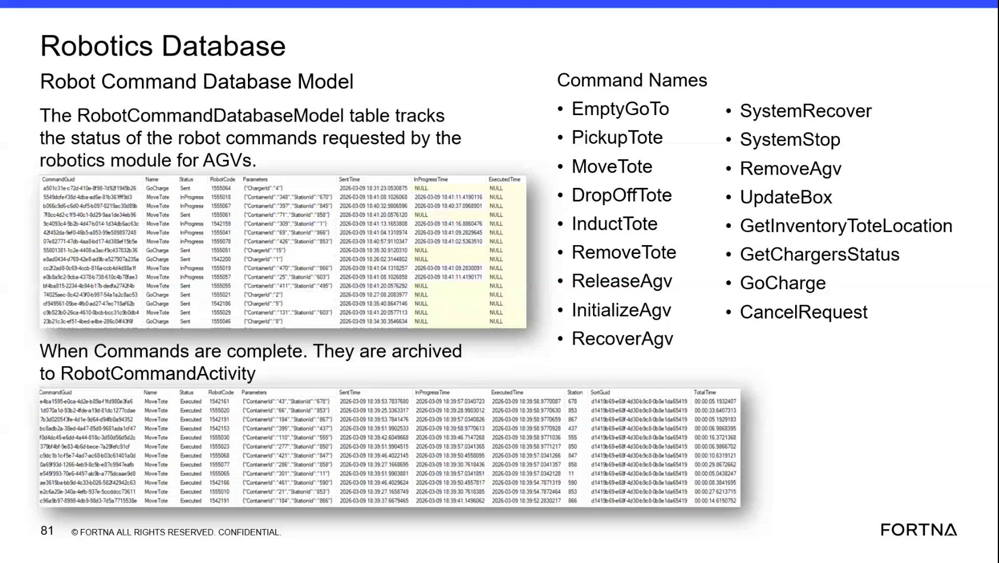

| Procedure ID | proc_diagnose_agv_robot_command_state_in_robotics_database_v1 |
|---|---|
| Title | Diagnose AGV Robot Command State in WCS / Helix DB (SSMS) |
| Procedure Type | diagnostic |
| Primary Role | L2_support |
| Support Safe | Yes |
| Capability Tags | robot_command_or_task_state |
| Access Surface | wcs_sql |
| Audience Roles | L2_support, L3_support |
| Failure Pattern Tags | robot_task_or_command_stuck |
| Validation Status | needs_sme_review |
| Merge Status | source_finalized |
Use the WCS / Helix DB (SSMS) in read-only mode to trace an AGV command through the Robotics Database RobotCommandDatabaseModel active-command table and Robot Command Activity history. Review command identity, status, robot, container, station, location, parameters, and lifecycle timing fields to determine whether the command was sent, started, completed, errored, or cancelled.
Use this diagnostic on the live WCS / Helix DB (SSMS) when support needs to verify the lifecycle of an AGV command requested by the Robotics module, including whether an active command is Sent or InProgress, whether it has been archived, or whether it has an errored or cancelled status.

Responsible role: L2_support
Instruction:
In the WCS / Helix DB (SSMS), open the OptiSweep Robotics database and locate the RobotCommandDatabaseModel table. Review the active command rows and the command/status columns.
Expected result:
The live WCS / Helix DB (SSMS) view shows active robot commands requested by the Robotics module, with fields including CommandGuid, CommandName, Status, RobotCode, Parameters, Sent Time, InProgress Time, and Executed Time.
Stop or Escalate If:
Responsible role: L2_support
Instruction:
In the WCS / Helix DB (SSMS) RobotCommandDatabaseModel table, find the relevant row using the command name, RobotCode, CommandGuid, container or station parameters. For a Move Tote command, compare the ContainerId and StationId values in Parameters with the reported movement.
Expected result:
One active RobotCommandDatabaseModel row is matched to the reported AGV command using command identity and parameter values.
Stop or Escalate If:
Responsible role: L2_support
Instruction:
In the matched WCS / Helix DB (SSMS) row, review Status, Sent Time, InProgress Time, and Executed Time. A Sent command may have InProgress Time and Executed Time as NULL. An InProgress command has an InProgress Time while Executed Time remains NULL until the command is finalized.
Expected result:
The live row provides an observable lifecycle state through Status and the presence or absence of Sent Time, InProgress Time, and Executed Time.
Stop or Escalate If:
Responsible role: L2_support
Instruction:
In the WCS / Helix DB (SSMS) Robotics data, review the matched command's related robot location information, including CurrentLocationId and DestinationLocationId when available. Compare the location state with the command's station or destination parameters.
Expected result:
The live WCS / Helix DB (SSMS) data shows the AGV's current location and destination location in relation to the command being diagnosed.
Stop or Escalate If:
Responsible role: L2_support
Instruction:
If the command is no longer active in the WCS / Helix DB (SSMS) RobotCommandDatabaseModel table, locate the corresponding record in Robot Command Activity. Review the command name, status, robot name, container, station, parameters, Sent Time, InProgress Time, Executed Time, station circuit, and total time.
Expected result:
The live Robot Command Activity record provides the historical status and execution/timing information for the finalized command.
Stop or Escalate If: